From raw reads to Tn5 insertion sites, peaks, replicate agreement and a consensus peak set
In ATAC-seq: Tn5, fragment sizes, nucleosome ladder you saw what the assay measures. This lecture turns the reads into the things every downstream analysis starts from: peaks and a consensus peak set.
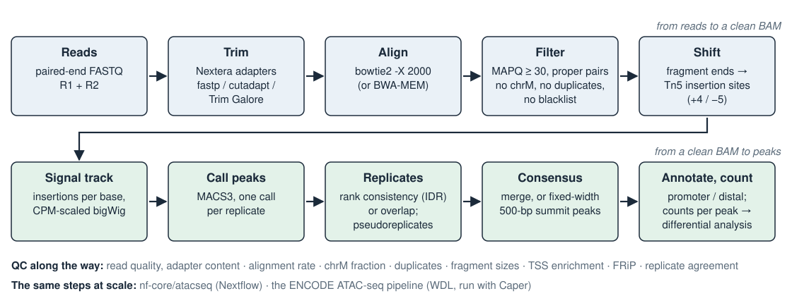
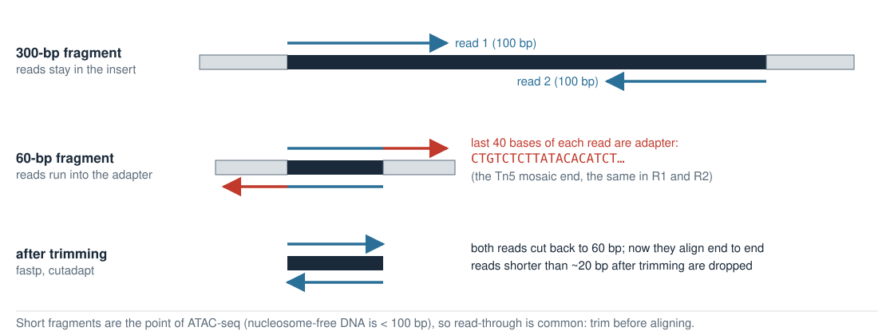
CTGTCTCTTATACACATCT….bowtie2 -p 8 --very-sensitive -X 2000 -x hg38_chr21_chrM \
-1 rep1_R1.trim.fq.gz -2 rep1_R2.trim.fq.gz 2> rep1.bowtie2.log \
| samtools fixmate -m -u - - | samtools sort -o rep1.raw.bam-X 2000: pairs up to 2 kb count as concordant. The default (500) makes di- and tri-nucleosome fragments “improper”.fixmate -m adds the mate tags that samtools markdup needs later.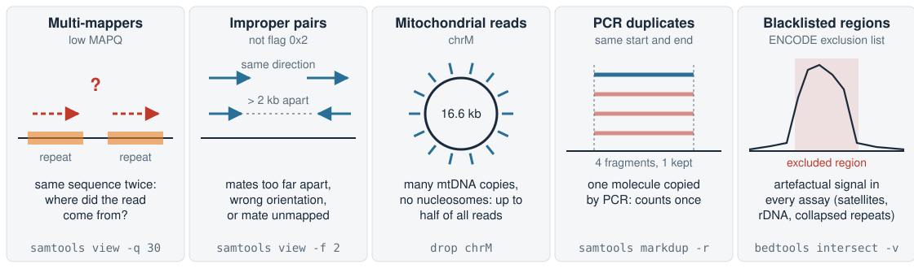
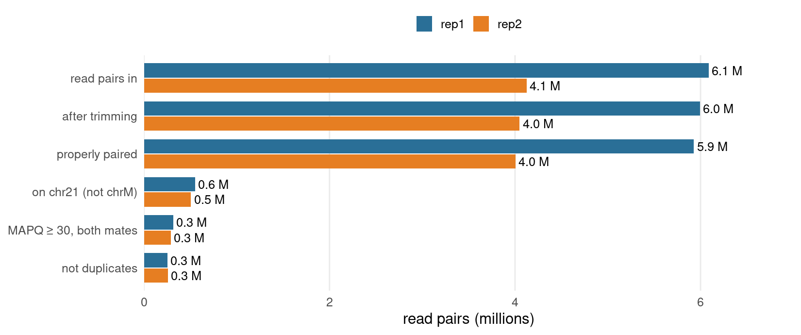
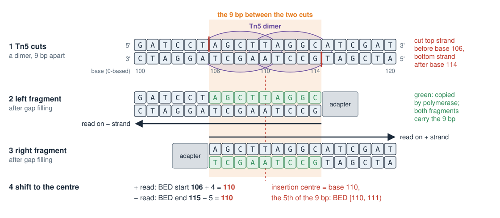
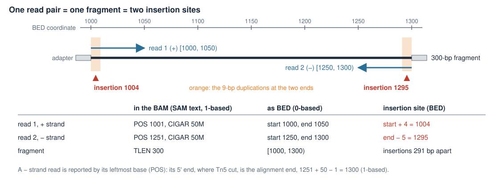
start + 4, − read end − 5. Tools: awk on a BEDPE file, or alignmentSieve --ATACshift (deepTools).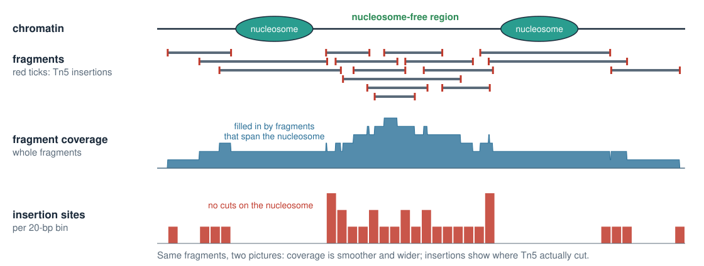
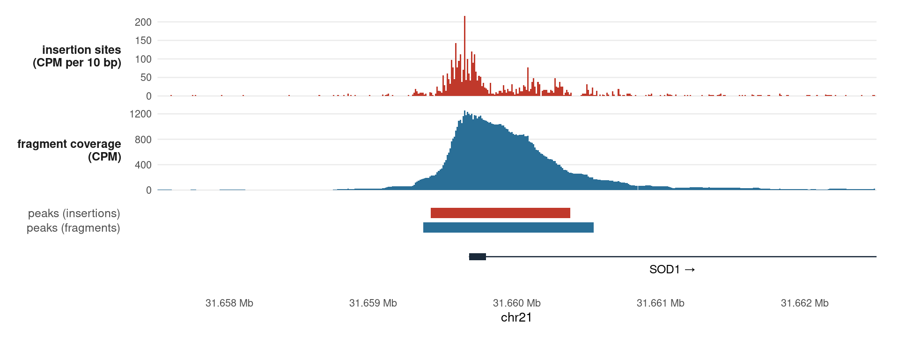
# insertion sites (one line per cut), sorted, as bedGraph -> bigWig, CPM-scaled
sort -k1,1 -k2,2n rep1.ins.bed > rep1.ins.sorted.bed
n=$(wc -l < rep1.ins.sorted.bed)
bedtools genomecov -i rep1.ins.sorted.bed -g chrom.sizes -bg -scale $(echo "1000000 / $n" | bc -l) \
> rep1.ins.cpm.bedGraph
bedGraphToBigWig rep1.ins.cpm.bedGraph chrom.sizes rep1.ins.cpm.bw
# or from the BAM with deepTools: fragment coverage, CPM
bamCoverage -b rep1.dedup.bam -o rep1.frag.cpm.bw --extendReads --normalizeUsing CPM -bs 10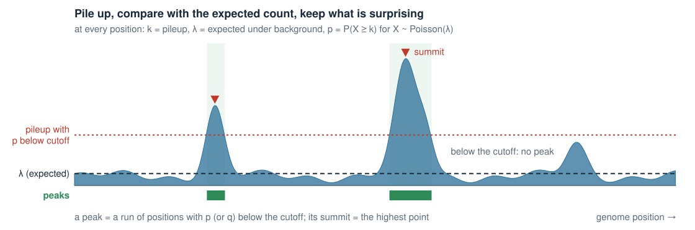
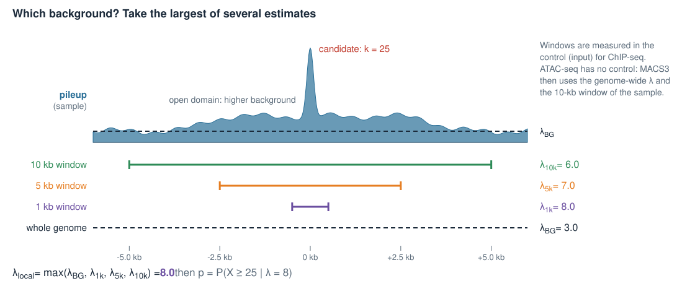
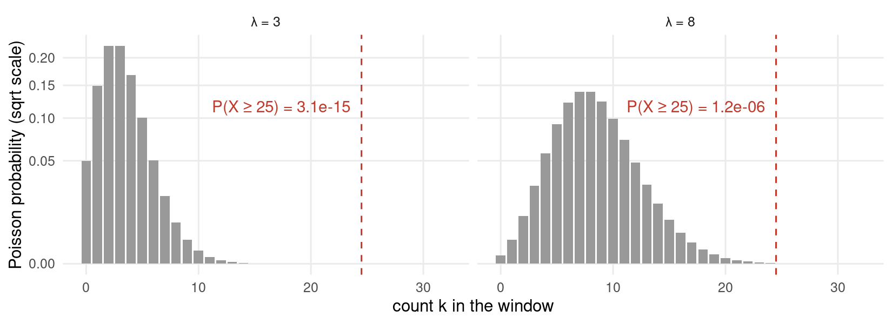
-q 0.01: expect about 1% of called peaks to be false.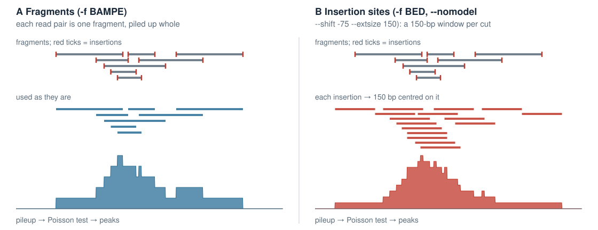
-f BAMPE: the pileup is the real fragments, no model, no shift. Simple; nucleosome-spanning fragments widen the peaks.--nomodel --shift -75 --extsize 150: every cut becomes a 150-bp window centred on it. Used by ENCODE and Corces et al. 2018.# A: fragments
macs3 callpeak -t rep1.dedup.bam -f BAMPE -g 4.0e7 --keep-dup all -q 0.01 -n rep1_frag
# B: insertion sites
macs3 callpeak -t rep1.ins.bed -f BED --nomodel --shift -75 --extsize 150 \
-g 4.0e7 --keep-dup all -q 0.01 -n rep1_cuts-g: effective genome size, sets λBG (hs ≈ 2.7e9; here chr21 only, 4.0e7).-q / -p: the cutoff; a lenient -p 0.01 when IDR chooses the final set.--keep-dup all: duplicates were already removed. --call-summits: several summits per broad peak.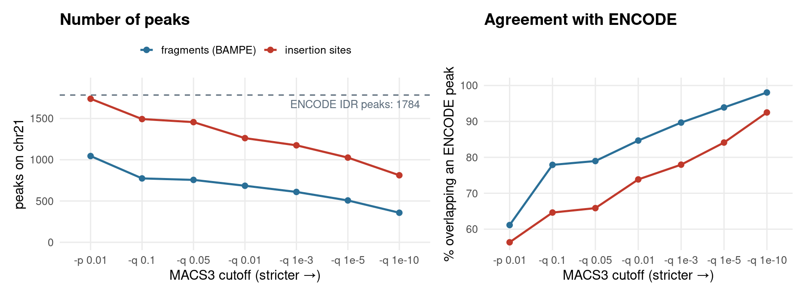
BAMPE), 1262 with insertion sites. ENCODE’s IDR set has 1784.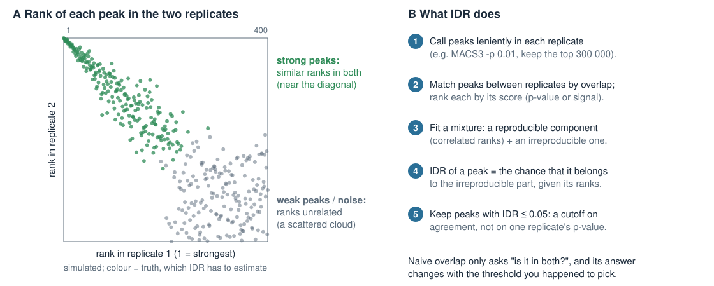
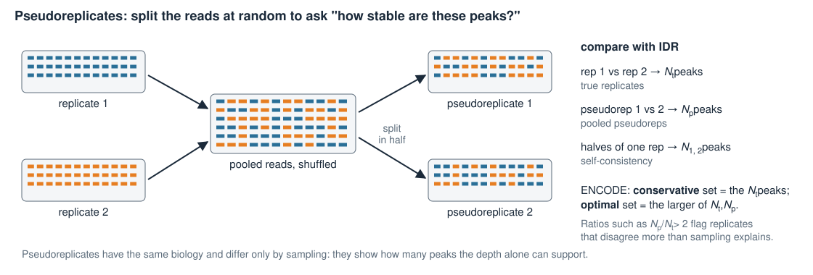
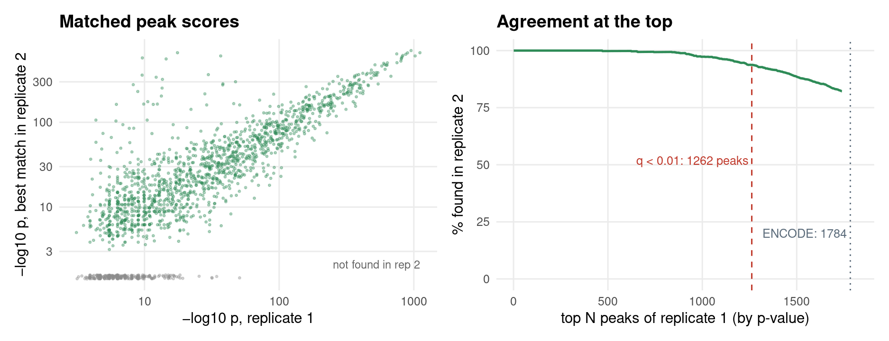
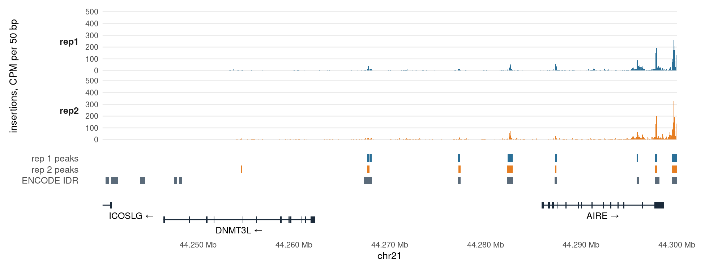
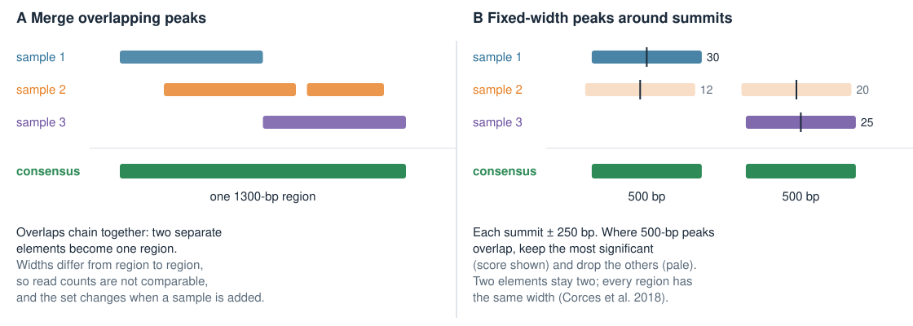
bedtools merge): simple, but overlaps chain into wide regions of very different widths.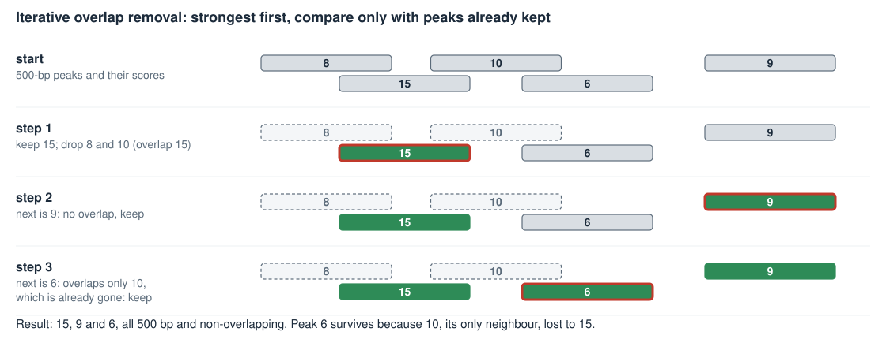
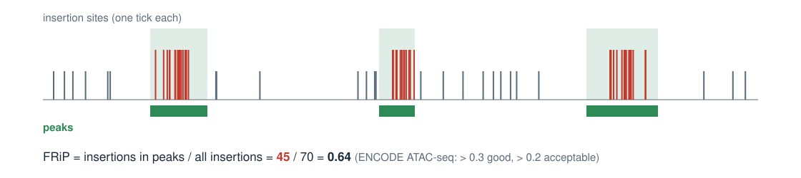
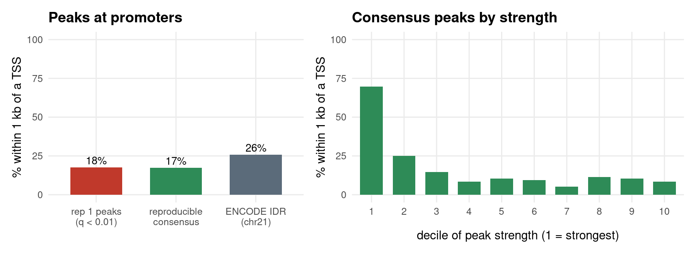
| pitfall | what happens | fix |
|---|---|---|
| chrM left in | 8 peaks on the 16.6-kb chrM; 91% of the reads; fewer real peaks | drop chrM reads |
| no blacklist | peaks in satellite repeats, also in “differential” lists | remove blacklisted peaks and insertions |
wrong -g |
λBG wrong by orders of magnitude | effective size of what you aligned to |
--keep-dup 1 on insertions |
independent cuts at the same base collapsed | --keep-dup all after deduplication |
| too lax a cutoff | many peaks, low reproducibility, inflated FRiP | IDR or rank consistency to choose |
| −strand read not shifted from its end | insertions off by a read length | shift BED end, not start |
| step | key idea |
|---|---|
| trim | Nextera adapter CTGTCTCTTATACACATCT; short fragments read through |
| align | -X 2000 so nucleosome-spanning pairs stay proper |
| filter | MAPQ, proper pairs, chrM, duplicates (same both ends), blacklist |
| shift | insertion = centre of the 9-bp duplication: + start +4, − end −5 (BED) |
| represent | fragments (smooth) or insertion sites (where Tn5 cut) |
| peaks | Poisson test against \lambda_\text{local} = \max(\lambda_\text{BG}, \lambda_\text{1k}, \lambda_\text{5k}, \lambda_\text{10k}); q-values by BH |
| MACS3 for ATAC | BAMPE, or insertions with --nomodel --shift -75 --extsize 150 |
| replicates | rank consistency (IDR) beats naive overlap; pseudoreplicates for depth |
| consensus | fixed 500-bp summit peaks, iterative overlap removal |
| QC | FRiP > 0.3; promoter fraction; agreement with a reference set |
Not required reading and not examined. For those who want the primary literature.